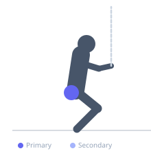

Exercise guide / Monster Walks with Band Around Ankles
Monster Walks with Band Around Ankles
Monster walks are a dynamic hip abductor exercise performed by walking laterally with a resistance band looped around the ankles. Maintaining a quarter-squat position throughout keeps constant tension on the hip abductors. This exercise is commonly used in warm-up protocols and rehabilitation to strengthen the gluteus medius, improve lateral hip stability, and address knee valgus patterns during athletic movement.
Primary muscles
gluteus medius
Secondary muscles
tensor fasciae latae
gluteus minimus
Stabilizers
quadriceps
gluteus maximus
Equipment
Resistance Band (Loop / Mini Band)


Starting position
- Place a resistance band around both ankles. Stand with feet hip-width apart in a quarter-squat position — knees slightly bent, hips pushed back slightly, chest tall.
Setup
- Choose a band that creates meaningful resistance without causing the torso to tip side to side during each step. Clear a path of at least 3-4 meters for lateral movement.
Steps
- Step 1: Adopt a quarter-squat stance with the band taut between the ankles.
- Step 2: Step laterally with the lead foot, widening the stance beyond shoulder width.
- Step 3: Follow with the trail foot, returning to shoulder-width — do not let feet come fully together.
- Step 4: Continue for the prescribed distance or steps, then repeat in the opposite direction.
Coaching cues
- Stay low throughout — do not bob up and down
- Drive through the outer hip to step, not the knee
- Keep toes pointing forward — avoid external rotation compensation
Breathing
- Breathe rhythmically throughout. Exhale on each step if needed; do not hold your breath.
Range of motion
- Each lateral step should be wide enough to maintain continuous band tension. Avoid shuffling with feet too close together.
Tempo
- Controlled — 1 second per step, maintaining consistent tension throughout
Common mistakes
- Allowing the torso to sway laterally with each step
- Letting feet come fully together (releases band tension)
- Standing fully upright rather than maintaining the squat position
Safety
- If you have knee pain, reduce band resistance and ensure knees track over toes
- Stop if you feel hip flexor cramping — reduce range or band resistance
Training
- endurance: 10–20 reps
- mobility: 5–10 reps
- endurance: 2–4 sets
- mobility: 2–3 sets
- Rest: {'endurance': 45, 'mobility': 60}